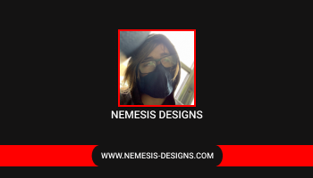
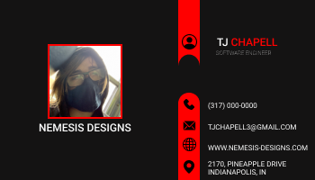
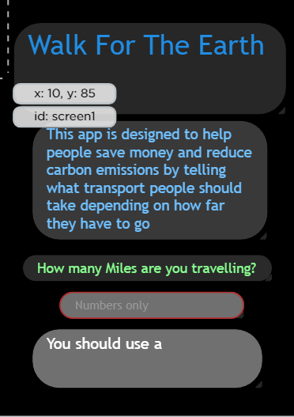

Projects
My Projects
During my High school years I have done a fair bit of coding in and out of school. I have done personal projects that I wanted to do myself and projects from my multiple CS courses during school time. I've also done a fair bit of popcode assignments here at the catapult program. These projects are mainly coded using Javascript, HTML, CSS, Java, and GML (Gamemaker Language). In this section I'll seperate some of my projects by what IDE they were made in.
Code.org
All of my projects on Code.org are from my courses in school. This has projects using languages from HTML Based to Java. My most 2 notable ones from each language would be my Pong game in JS and my Tic Tac Toe game on Java. The Tic Tac Toe game was a bit over-achieving as our teacher recomended only 1 line of the Tic Tac Toe game to work while I did all lines for both players
Pong

Tic-Tac-Toe
Eclipse IDE
All of my projects coded in this IDE are all personal Java projects I did. All of these are for a minecraft server that my cousin and I run pubicly and privatly. I usually make smaller plugins for the server that improve the gameplay in ways such as making it more of a challenging or fixing bugs that regular minecraft has, such as a plugin that makes piglins harder to kill.
POPCODE
All of my projects coded in this IDE are from Nextech. These include a fake website we made that was meant to represent someone's page from a hiring website. Other things I made from popcode include practice assignments such as a Jquery test where you have to put the correct answer into an input box.
HireMe!
Test
Misc. Projects
These are some extra projects that aren't neccesarily coding but important to add
Business Card
 App Lab Prototype
